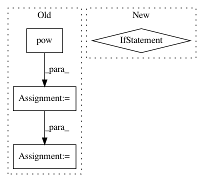

57dac10ec6b131842667bf58746168d9e99de9b3,onmt/Optim.py,Optim,step,#Optim#,30
Before Change
// Compute gradients norm.
grad_norm = 0
for param in self.params:
grad_norm += math.pow(param.grad.data.norm(), 2)
grad_norm = math.sqrt(grad_norm)
shrinkage = self.max_grad_norm / grad_norm
for param in self.params:
if shrinkage < 1:
After Change
def step(self):
// Compute gradients norm.
if self.max_grad_norm:
clip_grad_norm(self.params, self.max_grad_norm)
self.optimizer.step()
// decay learning rate if val perf does not improve or we hit the start_decay_at limit
def updateLearningRate(self, ppl, epoch):
In pattern: SUPERPATTERN
Frequency: 3
Non-data size: 4
Instances
Project Name: OpenNMT/OpenNMT-py
Commit Name: 57dac10ec6b131842667bf58746168d9e99de9b3
Time: 2017-03-14
Author: bryan.mccann.is@gmail.com
File Name: onmt/Optim.py
Class Name: Optim
Method Name: step
Project Name: OpenNMT/OpenNMT-py
Commit Name: 57dac10ec6b131842667bf58746168d9e99de9b3
Time: 2017-03-14
Author: bryan.mccann.is@gmail.com
File Name: onmt/Optim.py
Class Name: Optim
Method Name: step
Project Name: pytorch/examples
Commit Name: f5f63fb9c06cd626ff64a31b976e148c92ff99d1
Time: 2017-03-14
Author: bryan.mccann.is@gmail.com
File Name: OpenNMT/onmt/Optim.py
Class Name: Optim
Method Name: step
Project Name: keunwoochoi/kapre
Commit Name: 8cdbb1637b140c01f431831e7b2c2a63afc96209
Time: 2020-08-14
Author: gnuchoi+github@gmail.com
File Name: kapre/time_frequency.py
Class Name: Spectrogram
Method Name: call